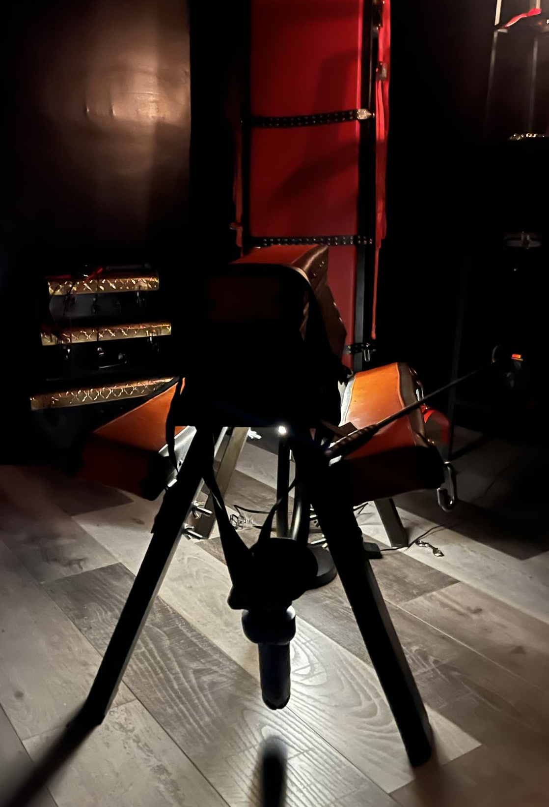
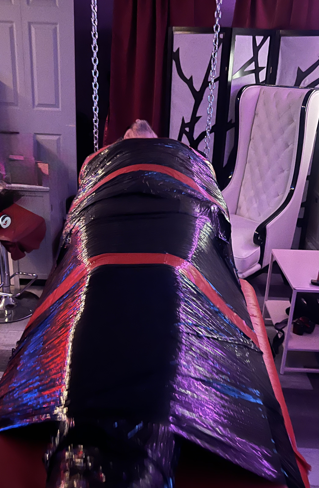

Strapon
Une dynamique de pouvoir physique assumée, où la posture, l’autorité et la présence prennent toute leur ampleur.
Univers privé · Raffinement · Intensité
Un espace pensé pour celles et ceux qui recherchent une expérience encadrée, élégante et immersive, dans une atmosphère feutrée propre à Cuir & Fantaisies.
Découvrir les servicesUne esthétique assumée
Chaque rencontre s’inscrit dans un cadre où la présence, le rituel, la tension et la qualité de l’atmosphère occupent une place centrale. Cette page présente quelques avenues possibles, dans un esprit à la fois sophistiqué, structuré et distinctif.
Explorations possibles

Une dynamique de pouvoir physique assumée, où la posture, l’autorité et la présence prennent toute leur ampleur.

Restriction, immobilisation et abandon progressif dans un cadre soigneusement maîtrisé.

Intensité, rythme, anticipation et montée des sensations dans une mise en scène précise et enveloppante.
Contrôle, précision, ambiance clinique et dramaturgie du geste dans une esthétique rigoureuse.

Contrastes, privation, découverte et raffinement des perceptions pour intensifier chaque instant.

Une exploration guidée du corps, orientée vers la détente, la vulnérabilité et les sensations profondes.

Jeu de rôle et dynamique d’autorité dans une exploration encadrée des fantasmes et du lâcher-prise.

Le cœur de l’univers Cuir & Fantaisies : direction, contrôle, cadre et interaction intense.

Transformation, posture, présentation et renversement des repères dans un univers stylisé et assumé.
Et plus encore…
Certaines avenues se prêtent mieux à un échange préalable afin de préserver la cohérence, le cadre et la qualité de l’expérience recherchée.
Prochaine étape
Pour en apprendre davantage sur le cadre, les possibilités ou l’orientation d’une rencontre, il est possible de faire une demande en passant par la page prévue à cet effet.
Accéder à la réservation